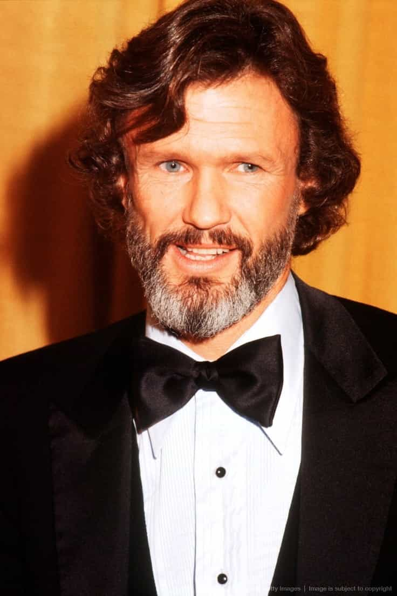
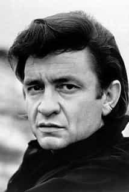
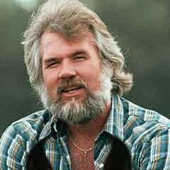
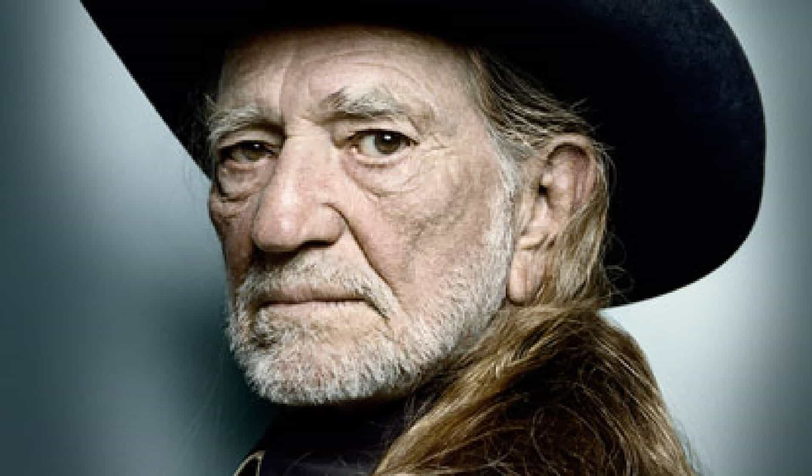
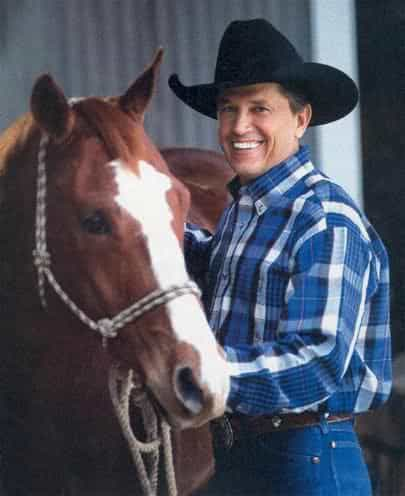

Many modern Americans do not listen to country music, for some reason or another. They listen to a whole lot of other modern music garbage but claim that country music “sucks” or is “boring” or “old-school”. For the modern male (those living in America especially), I feel that it is especially important to start appreciating this genre of music for what it is.
In this article I will be outlining the main reasons why I believe that more red-pilled men should listen to country music, as well as my top five country music artists and their songs that I highly recommend.
Reason 1: Red pilled lyrics
Referring mainly back to the good ol’ days of country music – the era of Johnny Cash, Kris Kristofferson, and the like – I can honestly say that much of the lyrics are red pill as f*k.
After being introduced to this genre from a young age by my father, I slowly grew to enjoy country music for it’s simplicity, traditional elements, great lyrics, and red-pill truth that is revealed in many songs.
Among some of the red pill topics I’ve heard in country music lyrics are: struggling with temptation (sexual intimacy, booze, drugs, etc.), coping through times of hardship, knowing when to fight and when not to, being lonely, losing a father (or other relative), and many more.
Reason 2: Traditionally American/Canadian
Unlike modern music, country changes little and although you now have countries outside the USA producing their unique brands of country music (think Australia, South Africa) as well, it still remains an American- and Canadian-dominated genre.
Most country singers will be seen wearing cowboy uniforms, hats, etc. They still believe in sticking to American/Canadian roots and traditions. Even the female country singers must be some of the most feminized women you can find nowadays in the music industry (think the likes of Shania Twain, Ann Murray, Kacey Musgraves).
So if you consider yourself conservative and traditionally American but don’t listen to country music, you ought to be ashamed of yourself! Without further ado, I shall move on to the best country singers of all time and songs I recommend from each one:
1. Kris Kristofferson

My personal favorite, Kris Kristofferson has a gruff voice that he uses equally well for both telling stories and singing. His lyrics are about as red pilled as they get, so this is one country singer I highly recommend to newbies.
Best songs: 1. To Beat The Devil (temptation and struggle through hardship)
2. Help Me Make It Through The Night (loneliness, sexual desires)
3. Sunday Morning Coming Down (loneliness, boredom)
4. Why Me Lord (gospel song)
2. Johnny Cash

Johnny Cash is known as one of the greatest artists of all time, incorporating elements of rock and roll, rockabilly, blues, folk, and gospel into his music. He too, is a shining example of masculinity : he helped to dig his brother’s grave, he was arrested seven times, and he served in the Air Force.
Best songs: 1. Understand Your Man (dealing with women’s bullshit)
2. Solitary Man (loneliness, difficulty finding a good woman)
3. I Hung My Head (killing a man for no reason!)
4. Folsom Prison Blues (time spent in prison)
3. Kenny Rogers

Another great example of traditional masculinity, Kenny Rogers is also an iconic country artist and is a member of the Country Music Hall of Fame.
Best songs: 1. Coward of the County (message to son to not follow his footsteps)
2. Ghost of Another Man (seeing another man with his wife)
3. I Wasn’t Man Enough (self-explanatory)
4. Lucille (woman leaving man with responsibilities at inopportune time)
4. Willie Nelson

A true veteran of the Country genre, this guy is renown for popularizing the “outlaw country” music genre. While he may be more liberal, as is evident by his use of marijuana and his activism for biofuels, he still remains fairly conservative in his songs, which mostly reflect upon earlier times (“cowboy” days). Most notable for his long locks of hair and his guitar “Trigger” which has a hole in it, and his American patriotism.
Best songs: 1. To All The Girls I’ve Loved Before (self-explanatory)
2. City of New Orleans (American pride)
3. My Heroes Have Always Been Cowboys (glorifying cowboys and their lifestyle)
4. Mammas Don’t Let Your Babies Grow Up To Be Cowboys (warning to mothers but encouragement to masculine men)
5. Pancho and Lefty (song about betrayal of Mexican outlaw Pancho Villa by his sidekick Lefty)
5. George Strait

Last but not least on this list, the so-called “King of Country” Mr George Strait, another alpha male cowboy country singer. This guy has undoubtedly looks made countless panties wet in his time and I’m sure continues to do so even today. Listed below are slightly more songs than the rest just due to this guy’s awesomeness.
Best songs: 1. All My Exes Live In Texas (self-explanatory)
2. Troubadour (about growing old)
3. The Fireman (different interpretations, but most common being that it’s a metaphor for a guy who bangs hot women or “puts them out”)
4. I Just Want To Dance With You (about not hesitating with women, taking the lead)
5. Cowboys Like Us (glorifying cowboy life)
6. Murder On Music Row (ode to dying traditional music and rise of degenerate modern music)
7. The Seashores of Old Mexico (about an outlaw finding refuge in Mexico)
Conclusion
The above mentioned country artists are merely five of the best. I realize that I have not mentioned ALL of the greats and I will address this in a future article. I will also be addressing different music genres and their respective red pill artists in future articles.
Read More: 5 Things Wrong With Modern Music